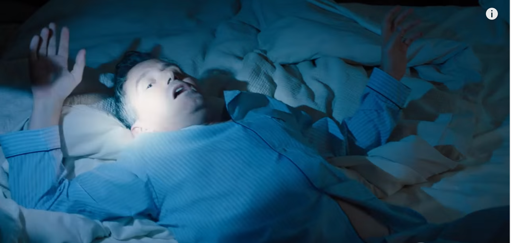

01
Donnie 家 → 检察官办公室
先让他感受被捕，再限定何时交人。

剧情事实FBI 凌晨冲进 Donnie 家，Bryan 说要让他体会以后被带走的感觉。Donnie 辩称 Kemlot 内部审计能在阿克斯做多时证明其逆着基本面交易，材料由老板发来；检方认为目前没有可信联系，要求一周内取得重大非公开信息交易的证据，否则就抓他本人。[1][2]
这一场为什么重要 · 个人解读
恐惧被明确当作催促的工具，而不是这份材料已经有力的证明。Donnie 想用“与数据相反的交易”推进案件，Bryan 要的是信息来源与交易之间的证据连接。两者的距离非常关键：优秀的预测、逆向判断和违法使用消息，不能只靠收益或方向来画等号。
因此 → 期限缩短，合作人承受更强压力；检方仍没有足够材料。